vCenter — Procedures¶
Service restart order for manual recovery:
1. vmware-vpostgres — database must be running before vpxd
2. vmware-stsd — SSO token service
3. vpxd — core vCenter service
4. vsphere-ui — vSphere Client (if needed)
Before you begin¶
- Access: vCenter read-only minimum; Administrator role for remediation steps
- Timing: safe to run during business hours unless a step is marked ⚠ (causes interruption)
- Dependencies: no active upgrades or migrations on the same infrastructure
- Logging: capture command output — paste into the change record on completion
Adding an ESXi Host to vCenter¶
# Via PowerCLI
$dc = Get-Datacenter -Name "DC-LON"
$cluster = Get-Cluster -Name "CL-LON-PROD"
$cred = Get-Credential # ESXi root credentials
Add-VMHost -Name "esxi-05.example.local" -Location $cluster -User root -Password $cred.GetNetworkCredential().Password -Force
Via UI: vCenter → Datacenter or Cluster → Actions → Add Host. Enter FQDN, root credentials, and accept the host thumbprint.
Post-add checks: - Host shows Connected state - VMs on host visible in inventory - Host belongs to correct cluster (DRS/HA active) - Host NTP, DNS, and syslog confirmed configured
Placing a Host in Maintenance Mode¶
# PowerCLI — maintenance mode with vMotion evacuation
$vmhost = Get-VMHost -Name "esxi-01.example.local"
Set-VMHost -VMHost $vmhost -State Maintenance -Evacuate
# Wait for maintenance mode to be accepted
do {
Start-Sleep -Seconds 10
$vmhost = Get-VMHost -Name "esxi-01.example.local"
Write-Host "State: $($vmhost.State)"
} until ($vmhost.State -eq "Maintenance")
# From ESXi shell (if vCenter unavailable)
esxcli system maintenanceMode set --enable true
esxcli system maintenanceMode get
Common errors
Could not connect to the local host. Error: Connection refused — Ensure the ESXi host SSH service is running and you have network connectivity to the management interface.
Unknown command or namespace maintenanceMode — Verify you are running this command on ESXi 5.0 or later; older versions use different maintenance mode syntax.
Exit maintenance mode:
vMotion — Migrating a VM¶
# Live vMotion (compute only — same storage)
Move-VM -VM "app-server-01" -Destination (Get-VMHost "esxi-02.example.local")
# Storage vMotion (same host, different datastore)
Move-VM -VM "app-server-01" -Datastore (Get-Datastore "DS-VMFS-PURE01-02")
# Full migration (compute + storage)
Move-VM -VM "app-server-01" `
-Destination (Get-VMHost "esxi-02.example.local") `
-Datastore (Get-Datastore "DS-VMFS-PURE01-02")
# Bulk evacuate all VMs from a host
$sourceHost = Get-VMHost "esxi-01.example.local"
$targetHost = Get-VMHost "esxi-02.example.local"
Get-VM -Location $sourceHost | Move-VM -Destination $targetHost
vMotion requirements: - Shared storage visible to both hosts (for compute-only vMotion) - vMotion VMkernel on both hosts (same layer-2 or routed vMotion network) - Compatible CPU features (use EVC cluster mode to align CPU generations)
Snapshot Management¶
Snapshots consume datastore space equal to the delta from the base disk. Stale snapshots degrade I/O performance and fill datastores.
# Find all snapshots older than 7 days across all VMs
Get-VM | Get-Snapshot |
Where-Object { $_.Created -lt (Get-Date).AddDays(-7) } |
Select-Object @{N="VM";E={$_.VM.Name}}, Name, Created,
@{N="SizeGB";E={[math]::Round($_.SizeGB, 2)}},
@{N="AgeDays";E={[math]::Round(((Get-Date) - $_.Created).TotalDays, 0)}} |
Sort-Object AgeDays -Descending
# Remove a specific snapshot
Remove-Snapshot `
-Snapshot (Get-Snapshot -VM "app-server-01" -Name "pre-patch-2026-04-01") `
-Confirm:$false
# Remove ALL snapshots for a VM (consolidate)
Get-Snapshot -VM "app-server-01" | Remove-Snapshot -RemoveChildren -Confirm:$false
# Find VMs needing disk consolidation (snapshot files remain after removal)
Get-VM | Where-Object { $_.ExtensionData.Runtime.ConsolidationNeeded } |
Select-Object Name, @{N="Host";E={$_.VMHost.Name}}
Consolidation via UI: right-click VM → Snapshots → Consolidate. This removes orphaned delta files without removing a snapshot from the tree.
Inventory Hygiene Tasks¶
Run these weekly or include in the daily check script.
# Find orphaned / unexpectedly powered-off VMs
Get-VM | Where-Object { $_.PowerState -eq "PoweredOff" } |
Select-Object Name, @{N="Host";E={$_.VMHost.Name}},
@{N="LastChange";E={$_.ExtensionData.Config.ChangeVersion}}
# VMs not assigned to any resource pool (using cluster root directly)
Get-VM | Where-Object { $_.ResourcePool.Name -eq (Get-Cluster).Name } |
Select-Object Name, PowerState
# VMs with VMware Tools not running
Get-VM | Where-Object { $_.ExtensionData.Guest.ToolsRunningStatus -ne "guestToolsRunning" } |
Select-Object Name, PowerState, @{N="ToolsStatus";E={$_.ExtensionData.Guest.ToolsRunningStatus}}
# Export full VM inventory
Get-VM | Select-Object Name, PowerState, NumCpu, MemoryGB,
@{N="VMHost";E={$_.VMHost.Name}},
@{N="Cluster";E={$_.VMHost.Parent.Name}},
@{N="Datastore";E={($_ | Get-Datastore).Name -join ";"}} |
Export-Csv -Path vm_inventory.csv -NoTypeInformation
Resync Disconnected Host¶
When a host shows "Not Responding" or "Disconnected":
# From VCSA SSH — check vpxd log for host connectivity errors
grep "<esxi-hostname>" /var/log/vmware/vpxd/vpxd.log | tail -50
# PowerCLI — attempt reconnect
(Get-VMHost "esxi-01.example.local").ExtensionData.ReconnectHost_Task($null)
# From ESXi host SSH — restart the vCenter agent (vpxa)
/etc/init.d/vpxa restart
/etc/init.d/hostd restart
# Verify agent is running
/etc/init.d/vpxa status
Stopping vpxa...
Waiting for vpxa to stop...
Starting vpxa...
Waiting for vpxa to start...
vpxa started successfully.
Stopping hostd...
Waiting for hostd to stop...
Starting hostd...
Waiting for hostd to start...
hostd started successfully.
Running /etc/init.d/vpxa status
vpxa is running.
Common errors
vpxa is not running. — Check /var/log/vpxa.log for startup errors and verify network connectivity to vCenter Server.
Unable to connect to the local hostd agent — Wait 30-60 seconds for hostd to fully initialize after restart before checking vpxa status.
If the host certificate has drifted from vCenter's expected thumbprint, reconnect via UI and accept the new thumbprint, or re-add the host to vCenter after removing it.
Managing vSphere Tags¶
Tags are used for inventory classification, RBAC scoping, and backup policy targeting.
# List all tag categories and tags
Get-TagCategory
Get-Tag
# Assign a tag to a VM
$tag = Get-Tag -Name "prod" -Category "env"
New-TagAssignment -Tag $tag -Entity (Get-VM "app-server-01")
# List all VMs with a specific tag
Get-TagAssignment -Tag (Get-Tag -Name "prod" -Category "env") |
Select-Object -ExpandProperty Entity |
Where-Object { $_ -is [VMware.VimAutomation.ViCore.Types.V1.Inventory.VirtualMachine] } |
Select-Object Name, PowerState
# Bulk tag assignment
$tag = Get-Tag -Name "gold" -Category "tier"
Get-VM -Location (Get-Cluster "CL-LON-PROD") | ForEach-Object {
New-TagAssignment -Tag $tag -Entity $_ -ErrorAction SilentlyContinue
}
# Export tag assignments to CSV
Get-TagAssignment | Select-Object `
@{N="Entity";E={$_.Entity.Name}}, `
@{N="Category";E={$_.Tag.Category.Name}}, `
@{N="Tag";E={$_.Tag.Name}} |
Export-Csv -Path tag_assignments.csv -NoTypeInformation
Reconfiguring vSphere HA¶
After adding or removing hosts, or after host failures, HA may need reconfiguration:
# Check HA state on all clusters
Get-Cluster | Select-Object Name, HAEnabled, HAAdmissionControlEnabled, HAFailoverLevel
# Reconfigure HA on a specific cluster (resolves most config warnings)
$cluster = Get-Cluster -Name "CL-LON-PROD"
$clusterView = $cluster | Get-View
$clusterView.ReconfigureComputeResource_Task($clusterView.ConfigurationEx, $true)
Via UI: right-click cluster → Reconfigure for vSphere HA. This re-evaluates all hosts and resolves most "HA configuration issues" warnings without disrupting running VMs.
Content Library Management¶
Content Libraries store VM templates, OVF/OVA templates, and ISO images centrally.
# List content libraries
Get-ContentLibrary
# Get items in a library
Get-ContentLibrary -Name "Templates-LON" | Get-ContentLibraryItem
# Deploy a VM from a template in the content library
$template = Get-ContentLibraryItem -Name "RHEL9-Gold" -ContentLibrary "Templates-LON"
New-VM -Name "new-vm-01" -ContentLibraryItem $template `
-VMHost (Get-VMHost "esxi-01.example.local") `
-Datastore (Get-Datastore "DS-VMFS-PURE01-01") `
-ResourcePool (Get-ResourcePool "RP-PROD-STANDARD")
Best practices: - Publish a single library from a central vCenter; subscribe from spoke vCenters (Linked Mode or subscribed library) - Keep templates on a dedicated datastore separate from production VM storage - Update templates monthly — patch, update VMware Tools, then convert back to template
Replace vCenter Certificates (VMCA)¶
vCenter certificate replacement is required when certificates expire, are compromised, or when moving to a custom CA.
# Method 1: Auto-renew machine SSL cert via VAMI (for VMCA-signed certs)
# https://<vcenter-fqdn>:5480 → Certificate Management → Machine SSL Certificate → Renew
# Method 2: Replace with custom CA cert using certificate-manager
ssh root@<vcenter-fqdn>
/usr/lib/vmware-vmca/bin/certificate-manager
# Option 1: Replace Machine SSL certificate with custom certificate
# Option 6: Replace Solution User certificates with custom certificate
# Provide: root CA cert, signed machine cert, private key
# Method 3: STS certificate renewal (required every 2 years for VMCA-signed)
# STS certs do not auto-renew — check expiry:
python /usr/lib/vmware-vmafd/bin/lstool.py list --url http://localhost:7080/lookupservice/sdk 2>/dev/null | grep -i expire
# Renew STS cert (vSphere 7+):
/usr/lib/vmware-vmafd/bin/vecs-cli entry list --store TRUSTED_ROOTS
# Use certificate-manager → Option 8: Reset all certificates
root@vcenter.example.com [ ~ ]# /usr/lib/vmware-vmca/bin/certificate-manager
*** Welcome to Certificate Manager ***
Please select an option [1-9]:
1. Replace Machine SSL certificate with Custom Certificate
2. Replace VMCA-signed Machine SSL certificate with VMCA signed certificate
3. Regenerate a new VMCA Root Certificate
4. Replace Solution User certificates with custom certificate
5. Replace Solution User certificates with VMCA signed certificate
6. Regenerate a new Solution User certificate
7. Reset all Certificates
8. Replace Machine SSL certificate with VMCA signed certificate
9. Exit
Option [1-9]: 1
Please provide a Certificate file [.crt/.cer]: /root/machine-cert.crt
Please provide a Private Key file [.key]: /root/machine-key.key
Please provide a Root CA Certificate file [.crt/.cer]: /root/root-ca.crt
Certificate replaced successfully. Please restart all services.
root@vcenter.example.com [ ~ ]# python /usr/lib/vmware-vmafd/bin/lstool.py list --url http://localhost:7080/lookupservice/sdk 2>/dev/null | grep -i expire
Expires: 2025-03-15T18:42:31.000Z
Expires: 2025-03-15T18:42:31.000Z
root@vcenter.example.com [ ~ ]# /usr/lib/vmware-vmafd/bin/vecs-cli entry list --store TRUSTED_ROOTS
Entry 0
Alias: __MACHINE_CERT
Type: X.509 Certificate
Expires: 2026-03-14 18:42:31 UTC
Common errors
Error: Certificate file not found or invalid format — Verify the certificate file path and ensure it is in PEM format (.crt or .cer).
Error: Private key does not match certificate — Regenerate the certificate signing request and ensure the private key corresponds to the signed certificate.
Error: Root CA certificate validation failed — Confirm the root CA certificate is valid and in the correct chain order for your custom CA.
Post-replacement validation:
# Verify new cert is active
echo | openssl s_client -connect <vcenter-fqdn>:443 2>/dev/null | openssl x509 -noout -dates -subject
# Confirm NotAfter shows new expiry
# Verify services are healthy after restart
vmon-cli --status | grep -E "RUNNING|STOPPED"
# All critical services should be RUNNING
# Verify vCenter is accessible from vSphere Client
# Verify ESXi hosts still show Connected
notBefore=Jan 15 10:23:45 2024 GMT
notAfter=Jan 15 10:23:45 2025 GMT
subject=C = US, ST = California, L = San Francisco, O = Acme Corp, CN = vcenter.acme.local
vpxd RUNNING
vpxd:vpxd RUNNING
vpxd:vpostgres RUNNING
vsphere-ui RUNNING
vsphere-ui:vsphere-ui RUNNING
sps RUNNING
sps:sps RUNNING
netdump RUNNING
Common errors
connect: Connection refused — Verify vCenter is running and port 443 is accessible; check firewall rules and vmon-cli --status output.
STOPPED — Restart the stopped service using vmon-cli --restart <service-name> and wait 2–3 minutes for full initialization.
unable to load certificate — Confirm the certificate file path is correct and readable; verify the certificate was properly imported using certificate-manager utility.
vCenter File-Based Backup¶
vCenter supports scheduled file-based backups to NFS, SFTP, FTPS, HTTP, or HTTPS locations.
# Configure backup via VAMI: https://<vcenter-fqdn>:5480
# Backup → Configure → set protocol, location, credentials, schedule, retention
# Trigger manual backup via API
curl -sk -X POST "https://<vcenter-fqdn>/api/vcenter/deployment/backup/schedules?vmw-task=true" \
-H "vmware-api-session-id: <session-id>" \
-H "Content-Type: application/json" \
-d '{
"location_type": "SFTP",
"location": "sftp://backup-srv/vcenter-backups",
"location_user": "vcbackup",
"location_password": "<password>",
"parts": ["SEAT"]
}'
# SEAT = Statistics, Events, Alarms, Tasks (recommended addition to core backup)
# Monitor backup job status
$headers = @{ "vmware-api-session-id" = $sessionId }
Invoke-RestMethod "https://<vcenter-fqdn>/api/vcenter/deployment/backup/job" -Headers $headers |
Select-Object id, state, end_time, messages
Backup includes: vCenter database, configuration, inventory, and optionally historical data (SEAT). Restore requires the vCenter ISO and backup archive.
Manage Roles and Permissions¶
vCenter RBAC uses Roles (permission sets) assigned to Principals (users or groups) at a specific inventory object level.
# List all roles
Get-VIRole
# Create a custom role with specific privileges
New-VIRole -Name "VM-Operator" -Privilege (Get-VIPrivilege -Id "VirtualMachine.Interact.PowerOn",
"VirtualMachine.Interact.PowerOff",
"VirtualMachine.Interact.ConsoleInteract",
"VirtualMachine.Interact.Suspend")
# Assign role to an AD group at a folder level
$folder = Get-Folder -Name "Production-VMs"
$principal = "DOMAIN\vm-operators"
New-VIPermission -Entity $folder -Principal $principal -Role "VM-Operator" -Propagate:$true
# List permissions on an object
Get-VIPermission -Entity (Get-Folder "Production-VMs")
!!! warning "Permission removal is immediate — export before deleting"
This command removes the permission immediately. Verify the principal and scope before running. Export current permissions first so you can restore if needed: `Get-VIPermission -Entity <entity> | Export-Csv perms-backup.csv`.
# Remove a permission
Get-VIPermission -Entity (Get-Folder "Production-VMs") -Principal "DOMAIN\vm-operators" |
Remove-VIPermission -Confirm:$false
Best practices: - Assign permissions at the lowest scope that satisfies the use case (folder/cluster, not root) - Use AD groups, not individual user accounts - Never assign Administrator role at root unless required for the admin account - Audit permissions quarterly: export and review unexpected root-level assignments
Configure SSO Identity Source (Active Directory)¶
Required before AD accounts/groups can authenticate to vCenter.
- vCenter → Administration → Single Sign On → Configuration → Identity Sources
- Click Add Identity Source
- Select Active Directory (Integrated Windows Authentication) for domain-joined VCSA, or Active Directory as an LDAP Server for explicit LDAP binding
- For LDAP binding:
- Domain name:
EXAMPLE.LOCAL - Domain alias:
EXAMPLE - Base DN for users:
CN=Users,DC=example,DC=local - Base DN for groups:
CN=Users,DC=example,DC=local - Username / Password: dedicated service account (e.g.,
svc-vcenter-ldap) - Click Test Connection → confirm AD is reachable
- Click Add → SSO now resolves AD users
- Assign vCenter roles to AD groups: Administration → Access Control → Global Permissions or per-object permissions
# Verify AD identity source via SSO API
curl -sk -X GET "https://<vcenter-fqdn>/api/vcenter/identity/providers" \
-H "vmware-api-session-id: <session-id>"
[
{
"name": "vsphere.local",
"type": "LOCAL_OS",
"friendly_name": "Local OS",
"domain_name": "vsphere.local"
},
{
"name": "corp.example.com",
"type": "LDAP",
"friendly_name": "Corporate Active Directory",
"domain_name": "corp.example.com",
"base_dn": "dc=corp,dc=example,dc=com"
},
{
"name": "lab.internal",
"type": "LDAP",
"friendly_name": "Lab Domain",
"domain_name": "lab.internal",
"base_dn": "dc=lab,dc=internal"
}
]
Common errors
curl: (60) SSL certificate problem: self signed certificate — Add the -k flag (already present) or import the vCenter CA certificate into your system trust store with curl -cacert /path/to/ca.crt.
{"type":"com.vmware.vapi.std.errors.unauthenticated","messages":["Invalid session."]} — Obtain a valid session ID by running curl -sk -X POST "https://<vcenter-fqdn>/api/session" -u "administrator@vsphere.local:password" first.
curl: (7) Failed to connect to <vcenter-fqdn> port 443: Connection refused — Verify vCenter is running and accessible on the network; check firewall rules and confirm the FQDN resolves correctly with nslookup <vcenter-fqdn>.
Configure a vSphere Alarm¶
Alarms alert on object state changes or metric threshold violations.
- vCenter → right-click the target object (cluster, datastore, host) → Alarms → New Alarm
- Set the alarm name and description
- Under Triggers, define the condition:
- State trigger: Host Connection State = Not Responding → trigger after 60 seconds
- Metric trigger: Datastore Free Space < 20% for 5 minutes
- Under Actions, configure what happens when the alarm fires:
- Send email notification (requires SMTP configured: Administration → SMTP)
- Run a script
- Send an SNMP trap
- Click OK — the alarm is immediately active for the selected object and (if checked) its children
# List all defined alarms
Get-AlarmDefinition | Select-Object Name, Enabled, Description
# Enable/disable a specific alarm
Get-AlarmDefinition -Name "Host CPU Usage" | Set-AlarmDefinition -Enabled:$false
# Acknowledge an active alarm
Get-AlarmAction | Where-Object { $_.Alarm.Name -eq "Host CPU Usage" }
Configure a Cluster (DRS and HA)¶
When creating or reconfiguring a cluster:
# Create a new cluster with DRS and HA
New-Cluster -Name "CL-LON-PROD" -Location (Get-Datacenter "DC-LON") `
-DrsEnabled:$true -DrsAutomationLevel FullyAutomated `
-HAEnabled:$true -HAAdmissionControlEnabled:$true
# Configure HA admission control (25% = 1-host failover for a 4-node cluster)
$cluster = Get-Cluster "CL-LON-PROD"
$spec = New-Object VMware.Vim.ClusterConfigSpecEx
$spec.DasConfig = New-Object VMware.Vim.ClusterDasConfigInfo
$spec.DasConfig.AdmissionControlPolicy = New-Object VMware.Vim.ClusterFailoverResourcesAdmissionControlPolicy
$spec.DasConfig.AdmissionControlPolicy.CpuFailoverResourcesPercent = 25
$spec.DasConfig.AdmissionControlPolicy.MemoryFailoverResourcesPercent = 25
($cluster | Get-View).ReconfigureComputeResource_Task($spec, $true)
# Enable EVC (Enhanced vMotion Compatibility) for mixed CPU generations
$clusterView = Get-Cluster "CL-LON-PROD" | Get-View
$evcSpec = New-Object VMware.Vim.EVCMode
$evcSpec.Key = "intel-broadwell" # set to the lowest CPU generation in cluster
$clusterView.ConfigureEvcMode_Task($evcSpec)
Verify cluster health after configuration:
# Check HA and DRS configuration
Get-Cluster "CL-LON-PROD" | Select-Object Name, HAEnabled, DrsEnabled, DrsAutomationLevel, HAAdmissionControlEnabled, HAFailoverLevel
Upgrade vCenter Server (VCSA)¶
vCenter upgrades use the VCSA installer ISO and run a 2-phase migration: deploy new VCSA then transfer data.
Pre-upgrade checklist: - Snapshot or file-based backup of current VCSA - Confirm all ESXi hosts are at or below the target vCenter's supported version - Resolve any existing alarms and health warnings - Check VMware Interoperability Matrix for NSX/vSAN/Aria compatibility
Phase 1 — Deploy new VCSA:
1. Mount the vCenter ISO on a Windows/Linux/macOS machine
2. Run vcsa-ui-installer/win32/installer.exe (or .../lin64/installer on Linux)
3. Select Upgrade → Install
4. Enter the source vCenter FQDN and credentials
5. Configure the new VCSA: deployment size, FQDN, IP, NTP, SSO password
6. The installer deploys the new VCSA alongside the existing one — no downtime yet
Phase 2 — Transfer data: 1. The installer prompts to switch to the new VCSA 2. vCenter inventory, permissions, and historical data are transferred 3. Source VCSA is powered off after successful transfer 4. Update DNS if using hostname-based access
Post-upgrade validation:
# Verify vCenter version from VAMI
curl -sk "https://<new-vcenter-fqdn>:5480/rest/appliance/system/version" \
-u "administrator@vsphere.local:<password>"
# Check all services running
ssh root@<new-vcenter-fqdn>
vmon-cli --status | grep -v RUNNING
# Verify ESXi hosts still show Connected in the new vCenter
{
"version": "7.0.3.00000",
"product": "VMware vCenter Server",
"build": "19480866",
"type": "vcsa"
}
STOPPED vmware-vpxd-svcs
STOPPED vmware-mbcs
root@vcenter.lab.local [ ~ ]# vmon-cli --status | grep -v RUNNING
root@vcenter.lab.local [ ~ ]#
Common errors
curl: (60) SSL certificate problem: self signed certificate — Add the -k flag to skip certificate verification, or import the vCenter CA certificate into your trusted store.
ssh: Could not resolve hostname <new-vcenter-fqdn>: Name or service not known — Replace <new-vcenter-fqdn> with the actual FQDN or IP address of your vCenter appliance.
Authentication failed for user 'administrator@vsphere.local' — Verify the password is correct and the user account exists; check vCenter's authentication source if using external identity provider.
Deploy a VM from OVA/OVF Template¶
Used to deploy pre-packaged virtual appliances (management tools, security scanners, monitoring agents) from vendor-provided OVA files.
Step 1 — Download and Validate the OVA¶
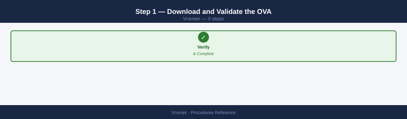
Before deploying, verify the OVA integrity using the vendor-provided SHA-256 checksum:
shasum -a 256 vendor-appliance.ova
# Compare output against the published checksum on the vendor download page
Common errors
shasum: vendor-appliance.ova: No such file or directory — Verify the OVA file exists in the current directory with ls -lh vendor-appliance.ova and correct the filename or path.
shasum: command not found — Install the sha utilities package with apt-get install coreutils (Debian/Ubuntu) or yum install coreutils (RHEL/CentOS), or use sha256sum instead.
Step 2 — Deploy via vCenter UI¶
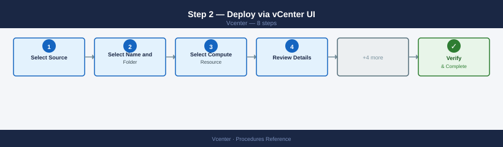
- In vCenter, right-click the target cluster or resource pool → Deploy OVF Template
- Select Source: upload the local
.ovafile or provide a URL - Select Name and Folder: choose a meaningful name and the target VM folder
- Select Compute Resource: choose the target cluster, resource pool, or host
- Review Details: confirm the OVA description and disk requirements
- Select Storage: choose a datastore with sufficient free space; select the storage policy (vSAN policy or datastore default)
- Select Networks: map the OVA's virtual networks to vCenter port groups
- Customize Template: fill in IP addresses, DNS, gateway, admin password, and any product-specific fields in the OVF Properties page
- Ready to Complete: review the summary → Finish
vCenter creates the VM and imports the disks. Monitor progress in Tasks (bottom panel) — deployment may take 5–30 minutes depending on disk size.
Step 3 — Post-Deploy Configuration¶
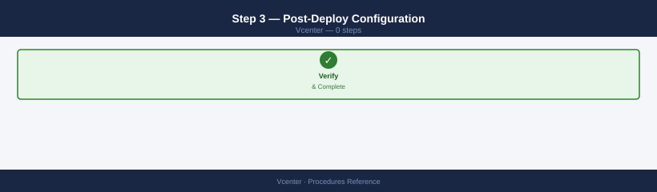
- Power on the VM: right-click → Power On
- Open the Web Console: right-click → Open Web Console — complete first-run setup wizard if the appliance has one
- Verify network connectivity:
ping <appliance-ip>and browse to the appliance management UI - Optionally convert the VM to a VM template for reuse: right-click → Template → Convert to Template
Create a vSphere Distributed Switch (VDS)¶
A VDS is a cluster-wide virtual switch managed centrally from vCenter, replacing per-host vSS configuration. Required for advanced features: Network I/O Control, port mirroring, LACP, LLDP, and NSX overlay transport.
Step 1 — Create the VDS¶
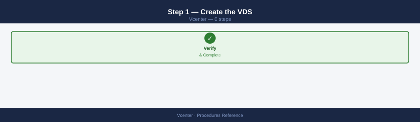
- vCenter → Datacenter → Configure → Distributed Switches → New Distributed Switch
- Set:
- Name: e.g.,
prod-dvs-01 - Version: match or exceed the oldest ESXi host version in the cluster (VDS version must be ≤ ESXi version)
- Number of uplinks: typically 2 (one per physical NIC per host); increase for link aggregation
- Network I/O Control: enable (allows bandwidth reservations for management, vMotion, storage traffic)
- Create a default port group during the wizard or skip and create manually
Step 2 — Add Hosts to the VDS¶
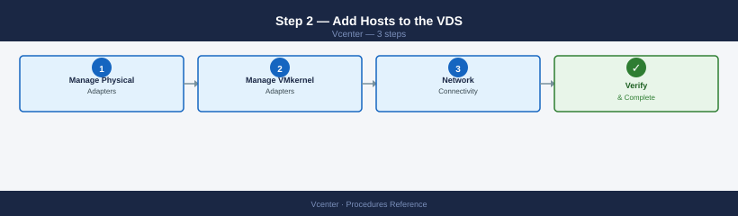
- Right-click the VDS → Add and Manage Hosts
- Select Add Hosts → select all hosts in the cluster
- Manage Physical Adapters: for each host, assign physical NICs to VDS uplinks
- Uplink 1 → vmnic2 (leave vmnic0 on vSS for management continuity)
- Uplink 2 → vmnic3
- Manage VMkernel Adapters: optionally migrate existing vmkernel adapters (vMotion, storage) from vSS to VDS port groups
- Network Connectivity: vCenter validates no management connectivity loss before committing
Migrating vmnic0 (management NIC) to the VDS risks losing host connectivity
If the management vmkernel adapter (vmk0) is on vmnic0 and vmnic0 is being moved to the VDS, vCenter must simultaneously move the management adapter to a VDS port group. If misconfigured, the host loses management connectivity and requires physical console access to recover. Always migrate management network last, one host at a time, and verify connectivity before proceeding to the next host.
Step 3 — Create Port Groups¶
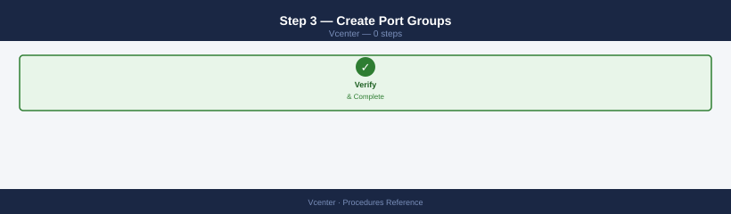
- Right-click the VDS → Distributed Port Group → New Distributed Port Group
- Configure:
- Name:
dpg-vmotion-vlan20,dpg-storage-vlan30,dpg-vm-prod-vlan100, etc. - VLAN: set the VLAN ID (or VLAN Trunk for uplink-facing port groups)
- Port Binding: Static (for vmkernel) or Dynamic (for VMs)
- Security Policy: Promiscuous mode Off / MAC Changes Reject / Forged Transmits Reject (standard defaults)
Step 4 — Verify¶
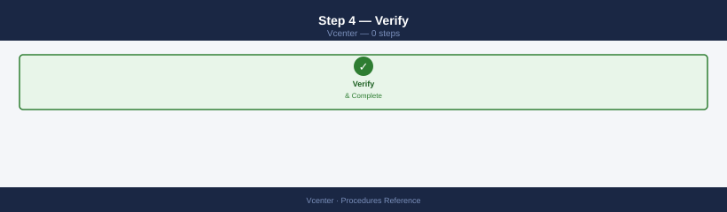
# PowerCLI — confirm VDS is created and hosts are added
Get-VDSwitch -Name "prod-dvs-01" | Select-Object Name, Version, NumUplinkPorts
Get-VDSwitch -Name "prod-dvs-01" | Get-VMHost | Select-Object Name, ConnectionState
Get-VDPortgroup | Where-Object {$_.VDSwitch.Name -eq "prod-dvs-01"} | Select-Object Name, VlanConfiguration
Configure Enhanced Linked Mode (ELM)¶
Enhanced Linked Mode joins multiple vCenter instances into a federated Single Sign-On domain, providing a unified inventory view and single authentication across all vCenters from any vSphere Client.
Prerequisites¶
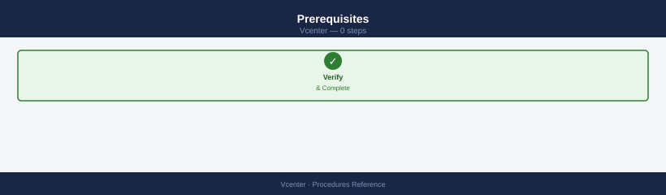
- All vCenters must be in the same SSO domain (e.g.,
vsphere.local) — each vCenter must be deployed pointing to the same Platform Services Controller (external PSC) or replication partner - vCenter versions must be within one major version of each other
- All vCenters must have network connectivity to each other on TCP 443
- ELM requires vCenter 6.5+ with embedded PSC (VCSA 7.x+ has no separate PSC)
For vCenter 7.x / 8.x (Embedded PSC — Replication-Based)¶
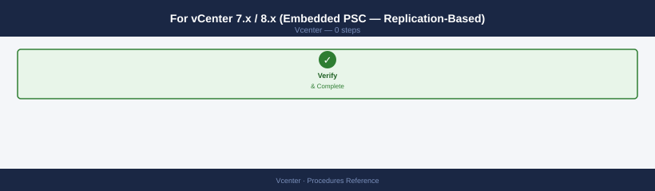
- Deploy the second vCenter VCSA with the same SSO domain (
vsphere.local) configured during setup — during the VCSA deployment wizard, select Join an existing SSO domain and provide the first vCenter's FQDN as the partner - Accept the replication partner certificate and provide the SSO administrator password
- Complete VCSA deployment — the SSO service replicates identity data (users, groups, permissions) between both vCenters automatically
Step 2 — Verify Linked Mode is Active¶
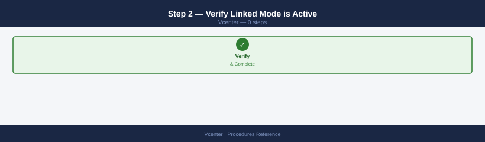
- Log in to either vCenter's vSphere Client
- Navigate to Home → Inventory — both vCenter instances should appear in the inventory tree
- Click the second vCenter's tree — it should expand without re-authentication (single sign-on)
# Confirm SSO replication from vCenter CLI
/usr/lib/vmware-vmafd/bin/vdcrepadmin -f showservers -h localhost -u administrator -w <password>
# Output should list both vCenters as replication partners
Replication Partners:
CN=vcenter-01.corp.local,OU=Domain Controllers,DC=vsphere,DC=local
CN=vcenter-02.corp.local,OU=Domain Controllers,DC=vsphere,DC=local
Partner: vcenter-01.corp.local
Status: Up
Last Heartbeat: 2024-01-15T14:32:18.456Z
Partner: vcenter-02.corp.local
Status: Up
Last Heartbeat: 2024-01-15T14:32:15.123Z
Replication Latency: 3ms
Common errors
Error: Cannot connect to localhost:389 (Connection refused) — Verify the vCenter SSO service is running with systemctl status vmware-vmafd and restart if needed.
Error: Authentication failed for user 'administrator' (Invalid credentials) — Confirm the SSO administrator password is correct and hasn't expired by testing login in the vSphere Client.
Error: vdcrepadmin: command not found — Ensure you are running this command directly on a vCenter Server appliance (not a remote host) where the vmafd tools are installed.
Step 3 — Configure Cross-vCenter Permissions (Optional)¶
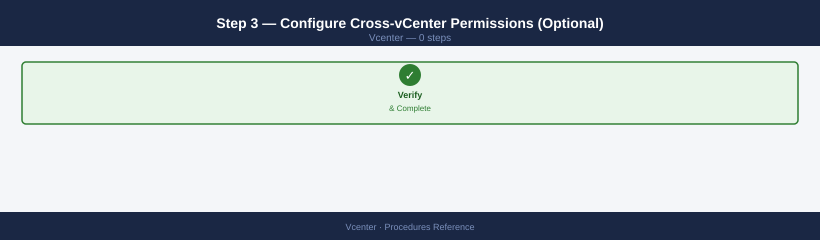
Global permissions set at the SSO domain level apply across all linked vCenters:
- vSphere Client → Administration → Access Control → Global Permissions → Add
- Assign the user or group, select the role, and check Propagate to children to apply across the linked domain
Global permissions bypass per-vCenter permission scoping
A global permission at the root level grants access to every object in every vCenter in the linked domain. Use sparingly — prefer per-vCenter datacenter-level permissions where tighter scoping is needed.
See also¶
- vCenter — Health Checks
- vCenter Troubleshooting — Common Issues
- vCenter — CLI Reference (PowerCLI & DCLI)
Verify¶
- Alarms: vSphere Client → Home → Alarms — no new critical alarms after the operation
- Events: monitor the vCenter Events view for the affected object for 5 minutes
- Health check: run the morning health-check sequence for the affected product tier